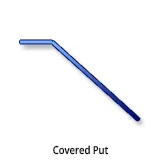
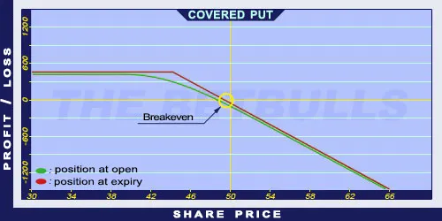

Description and use

A Covered Put option is the opposite of a Covered Call. The main idea is to short shares and sell a short term OTM Put option. The direction of the market is neutral/decreasing, the investor expects constant decrease on the market. The strategy is a net credit investment. The Put options are sold on a monthly basis. If the share stays below the strike price, the option will be exercised and the investor buys the shares. If the price stagnates, the investor can keep the premium received for the Put option. Therefore, a Covered Put position is the sale of the share and the agreement to buy the share if the option is exercised.
- Type: Neutral, Bearish
- Transaction type: Debit
- Maximum profit: Limited
- Maximum loss: Unlimited
- Strategy: Income strategy
Opening the Position
Covered Put Option Positions involve selling the share and selling the out-of-the-money (OTM) Put option.
Steps
Entry:
- Make sure the trend is inclining or stagnating at a certain level.
Exit:
- If the shares close above the strike price at expiry, the option will be exercised. The investor will have to buy back the shares at the strike price, with the profit being the received premium minus the decrease in the share price.
- If the share price is above the strike price but below the Stop Loss at expiration, the Short Put option should be left to expire worthless, and the received premium should be kept. Then, another Put option can be sold the next month.
- If the share price is below the Stop Loss at expiration, either the shares should be bought back or the trader should start trading in the opposite position.
Basic Characteristics
- Maximum loss: Unlimited.
- Maximum profit: (Strike price - share price) + premium.
- Time decay: Time decay has a positive effect on the value. If shares do not reach the strike price, the investor can keep the whole premium and decrease their costs.
- Breakeven point: Strike price + premium.
Advantages and Disadvantages
Advantages:
- Generates monthly profit.
- The risk is lower than selling the shares.
- The investor can profit from share prices moving within given limits as well.
Disadvantages:
- Said to be expensive because it involves high cash payment.
- The increase is limited when share prices fall.
- The decrease is unlimited if share prices increase.
Closing the Position
When the share price is below the strike price, the option will be exercised, generating a limited profit.
When the share price is above the strike price, the position will be loss-making. In such cases, the investor should either buy back the shares or buy back the shares and the Short Put option.
Mitigation of Losses
Either buy back the shares or buy back the shares and the Short Put option.
Example

Covered Put strategy example with ABCD traded at $50.00 on 25.02.2017. The investor sells a share for $49.75 and sells a Short Put option at $45.00 strike for $1.50 premium.
- Credit: $51.25
- Maximum loss (risk): Unlimited
- Maximum profit: $6.25
- Breakeven point: $51.25